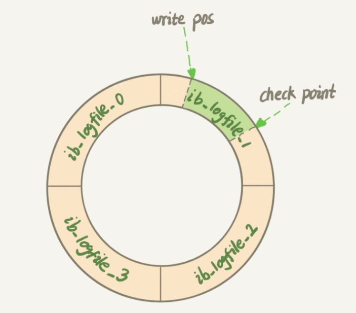

MySQL中的redo log和binlog
使用 MySQL 的过程中难免会与其日志系统打交道，主要有 redo log，binlog，undo log 和慢查询日志等，本文主要介绍 redo log 和 binlog。
1. redolog
1.1 buffer pool
数据库中的行数据、索引等，都是存储在磁盘上面的，当访问某个页时，需要从磁盘把整个页的数据加载到内存，读写完成之后释放内存。
磁盘访问是十分低效的，为此 InnoDB 引入缓冲池 buffer pool，在 MySQL 启动时申请一片连续的内存，作为磁盘页的缓存。对数据库进行读取页的操作，首先从磁盘读到的页存放在 buffer pool，从磁盘读入数据时，会将该页放入 buffer pool，下一次读取相同的页时，先判断在 buffer pool 中是否存在；对数据的修改也是先对 buffer pool 中的页进行修改，并由后台线程在系统空闲时进行刷盘。
buffer pool 的空间也是有上限的，其淘汰策略采用优化的 LRU 算法。
具体实现可见 《MySQL技术内幕 InnoDB 存储引擎》2.3.2 小节。
1.2 redo log
磁盘中的数据会落后于 buffer pool，如果进程或者机器崩溃， buffer pool 中未能落盘的数据将会丢失。事务中的持久性要求提交之后，对数据的修改不能丢失，一个直观的思路是事务提交前保证修改的页全部刷盘，但这个思路有两个不足：
- 刷新一个页过于浪费，有时候只改动了页中一点数据，却要将整个页的数据刷入磁盘
- 随机 IO，一个事务可能改动多个页面，传统的机械硬盘随机 IO 效率十分低下
为此 InnoDB 维护了 redo log，redo log 的思路是用轻量的数据记录改动，并把随机 IO 转化为顺序 IO，极大提升了写入效率。事务在 redo log 全部落盘后才能提交，即使崩溃也可以通过重放 redo log 复原数据，保证了持久性。
这种机制被称为 WAL，Write Ahead Log，被广大事务数据库采用。
那么 redo log 的格式应该是什么样呢？首先，redo log 的数据量需要尽可能小，否则会影响性能。其次，系统崩溃后重放数据不知道哪些页已经刷盘，redo log 应该保证幂等。因此，redo log 的格式为：
1 | (PageId, Record Offset, (Field 1, Value 1), (Field 2, Value 2)...) |
PageId 确定了修改的页，Record Offset 为修改的数据在页中的偏移，后面的 Field-Value 对记录了修改的列以及数据。
redo log 是 InnoDB 特有的机制。
1.3 redo log刷盘
InnoDB 为了解决磁盘速度过慢的问题引入 buffer pool，相应的，redo log 也不是直接写入磁盘，而是先写入 redo log buffer，默认在以下场景刷新到磁盘：
- redo log buffer 空间过半
- 事务提交前
- buffer pool 的页刷盘前
- 正常关闭服务等
- 做 checkpoint
redo log 的刷盘时机可以通过 innodb_flush_log_at_trx_commit 控制，可以通过牺牲持久性来换取运行效率，一般不推荐修改。
不幸的是，在磁盘上存储的 redo log 大小是有上限的，分为 4 块 1GB 大小的文件，总共 4 GB。从头开始写，写到末尾又从开头循环写，也就是说，后写的日志可能覆盖以前的位置。

write pos 是当前 redo log 记录的位置，而 checkpoint 是当前要擦除的位置， 中间是还可以记录的部分。当 buffer pool 中的页刷盘之后，其 redo log 便可以被覆盖了，checkpoint 则进行相应的改变。
2. binlog
2.1 介绍
上文说到 redo log 可以用于故障后恢复，但只限于 InnoDB，而 InnoDB 是在 MySQL 比较后面的版本才引入的。对于早期的 MySQL，使用的是 binlog。binlog 是 binary log 的缩写，即二进制日志，记录了对数据库执行的更改操作，主要用于全量数据备份。
binlog 可以通过启动选项 binlog-format 配置记录形式：
- statement： 记录 SQL 更新语句
- row：记录行的内容，包括更新前和更新后的值
- mixed：通常使用 statement，某些特殊情况转为 row，具体可见 binary log mixed
binlog 另一个用途是 MySQL 主从服务器之间的数据同步，在主从复制中 binlog-format 需要选择 row。
2.2 两阶段提交
两阶段提交是将 redo log 的写入分为 prepare 和 commit 两个部分，其中 commit 需要在 binlog 写入之后完成。
这里的两阶段提交与分布式事务中的两阶段提交不同，需要进行区分。
两阶段提交的目的是让 redo log 和 binlog 的逻辑一致。如果 binlog 写入成功但 commit 未提交，mysql 启动时会自动提交这个事务；如果 prepare 完成但 binlog 写入失败，mysql 启动时会自动回滚这个事务。
如果直接先写 redo log 后写 binlog，或者反过来，那么效果会如何，以下将 id = 2 的行中 c 从 0 更新到 1 进行分析：
- 先写 redo log 后写 binlog：redo log 写完，binlog 还没写完产生了 crash，通过回放 redo log 可以恢复 c = 1，但是 binlog 未写完，丢失了这个更新，那么在进行数据库备份时将会丢失这条数据，以后用这个备份进行恢复会导致数据错误；
- 先写 binlog 后写 redo log：回放 redo log 事务无效，c = 0，但在 binlog 中已经记录了 “c 从 0 变为 1” 这个日志，那么以后用 binlog 备份恢复时将会多出来这个事务。
3. 总结
redo log 用于恢复主机故障时未更新的数据，binlog 用于备份操作，两阶段提交就是保持故障恢复和备份恢复的结果一致性。